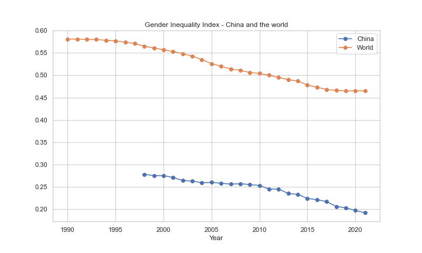
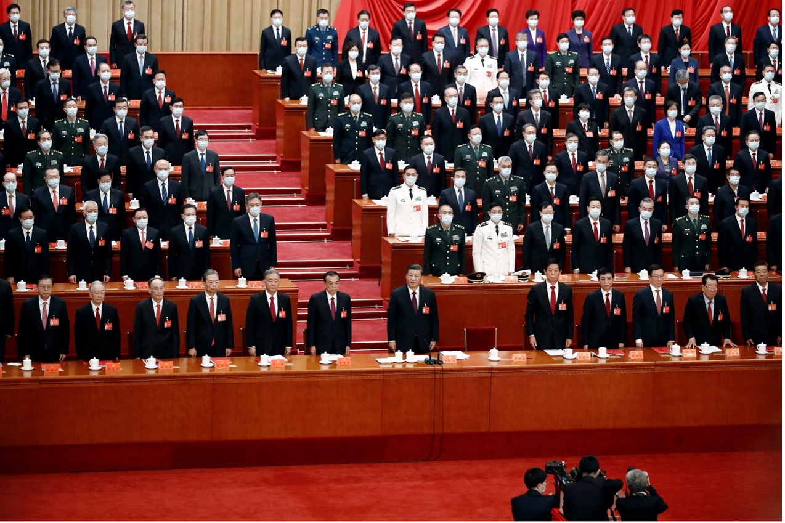

Gender equality has been improving in China in all sectors but one. The political sphere remains largely a man’s world.
The gender gap in China’s educational achievement has dramatically narrowed over the past few decades, and female participation in higher education is rising according tothe journal Gender Inequality in Education in China. Furthermore, CICC research noted that the female-dominated "women's economy" is growing, giving rise to the more original and fashionable Chinese term "she economy." However, on the other side of the coin, women participation in politics remains abysmally low.
This pattern appears to be confirmed by the gender inequality index (2021) in the September edition of the Human Development Report by the United Nations Development Program. The gender inequality index tracks disparities between men and women in the job market, empowerment, and reproductive health. Maternal mortality ratio and adolescent birth rates are used to assess reproductive health; parliamentary representation and the percentage of people with at least a secondary education are used to assess empowerment, and labor force participation rates for both men and women are used to assess labor market participation. China is ranked 48th out of 170 nations in 2021 with a GII rating of 0.192 out of 1.

Gender equality does not show in politics
However, a closer look at the data reveals that despite China's inequality index being at least 0.3 points lower than the global average, Chinese women's political empowerment has increased by just 3% over the past 30 years, compared to a 14% increase globally, which is four times more than China. Additionally, in 2019 the proportion of politically active Chinese women began to fall short of the global average.
 Gender inequality index on women’s political empowerment in ChinaAn even more unexpected result is revealed by data sources from the Council on Foreign Relations that specifically examines political gender parity (2020), with China ranking 157 out of 190 countries.
The political parity score combines women's representation in five different political participation indicators: national cabinets, local legislatures, national legislatures, national legislature candidates, and heads of state or government. The index measures the descriptive representation of women, which refers to their numerical presence rather than their influence or preferred policy positions.

From the political parity report, it is obvious that except for the fact that Chinese women hold 24.9% of the seats in the national legislature, which is slightly higher than the global average, other indicators are significantly below the global average in 2021. For instance, there are no women represented in local government organizations. The situation is currently also not improving since there are zero female candidates in the national legislature in 2021. Women's involvement in politics can promote gender equality and has an impact on the range of policy issues that are taken into consideration as well as the types of solutions that are put forth. However, the figure shows progress toward achieving gender balance in politics in China is slow and uneven.

Additionally, this is evident at the Communist Party Congress taking place from October 16–22, 2022. We once again saw a group photo of "men in suits" in the congress. The Chinese Communist Party has gradually increased the proportion of women at the grassroots level, as Xi Jinping promised in his report to the 19th National Congress to do. But there is still a long way to go before Chinese women can join the core leadership.
Underrepresentation of women in all levels
A report published by US-China Economic and Security Review Commission has revealed the lack of gender diversity in the leadership of China's Party, State, and Military. The figures from this report reflect a more general pattern of underrepresentation of women at all levels of the political system. The gender imbalance is reinforced at the highest levels.
Only eight women have joined the influential Politburo in Chinese community party, which consists of 25 members, since 1949. Sun Chunlan, the only woman currently serving on the Politburo, upholds China's "zero-coronavirus policy." There is none in the Politburo Standing Committee, as shown by the bar graph. The position with the most women is "alternative members in central committee," which has 12% of women. The Central Committee's substitute members, on the other hand, are referred to as alternate members of the Central Committee. They act as the official committee members' substitutes when they are absent.

Regarding representation of women at the state level in China, it hasn't gotten much better. It is concerning to note that there are no women serving as decision-making bodies in the positions of state president, minister, chairman of the national congress, and chief of a political consultative conference. In this case, it is unsurprising that there is no female representation in military leadership.
The "feminism" and "MeToo" movements have come under fire in recent years, and the "three-child" policy has reinforced traditional family values. These discriminatory policies are making it more difficult for women to advance their political ambitions. Despite the Chinese government's commitment to international conventions on women's rights in order to demonstrate its dedication to gender equality, women's participation in high-level decision-making processes is limited, and gendered political hierarchies persist.
As Sun Chunlan is expected to step down from her post and the party now readies itself for a new group of leaders, will the gender gap in politics change? The chances of significant change in female representation might remain slim.